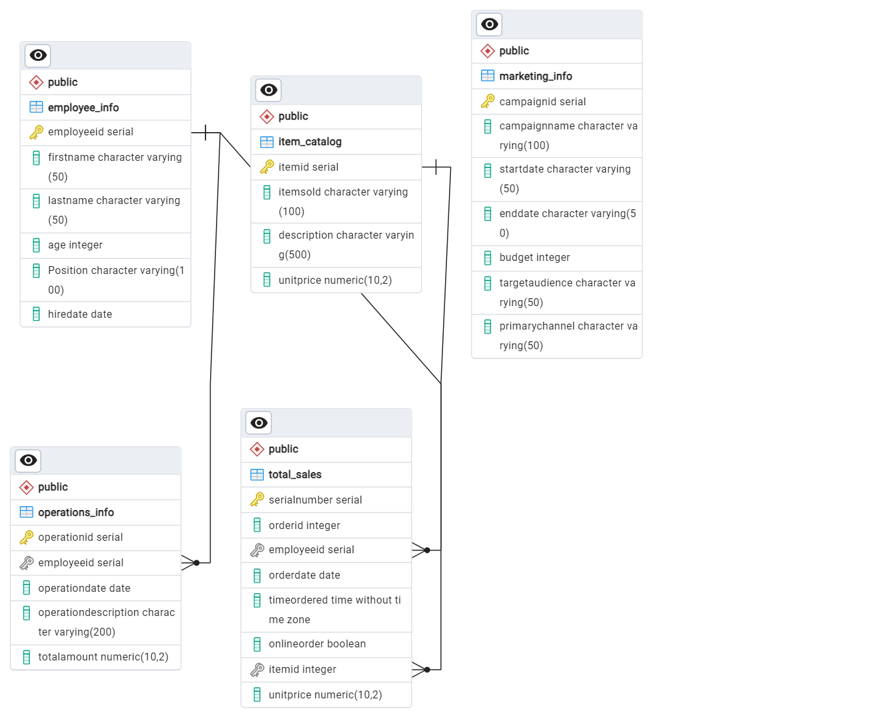

Project Overview
This project was completed using a variety of analytical tools to gain insight into a year's worth of sales for a fictional retail business. This was done to determine the key performance indicators and other useful information. This type of analysis is vital in understanding the financial health of a company and highlighting areas for improvement in operation costs and where revenue can be optimized.
Key Business Questions
Question 1: What are the sales trends over the year (e.g., peak sales periods, slow periods)?
Question 2: Which items have the highest sales volume or generate the most revenue?
Question 3: Are there any areas where costs can be optimized?
Data Cleaning
Cleaning the Sales CSV file with Python
• Imported the original uncleaned CSV flat file into Jupyter Notebook.
• Checked the data types to see what columns needed to be converted to a different type.
• Used Python (pandas import) to check for null values and duplicated values.
• Converted the date, time, ItemID, and onlineorder columns to the correct data types.
• Used the explode function in Python to create a separate row for each item in the ItemID column.
• Dropped the quantity column because each item in every order now has its own row.
• Imported the item catalog to get the correct unit price for each item in the itemID column.
• Dropped the order total column because each item is matched with a unit price.
• Created a serialID column to use as a primary key in SQL.
• Exported the clean sales CSV file.
*I repeated a similar process for the other available csv files.*
Data Analysis
Analysis with PostgresSQL
• Engineered a database to hold the cleaned csv files in PostgresSQL.
• Created an entity relationship diagram to show the relationships and referiential integrity of the tables.
• Queried the data to discover key facts such as total order amount, total sales, product performance information, and more.

Data Visualization
Tableau Dashboard Details:
• The total profit for each item that was sold.
• The total profit for each month.
• The net change from month to month.
• The hourly trend for sales.
(see below)
Key Insights
Sales Trends
Sales trends over the year follow a seasonal pattern. There is a signifcant increase in sales
during the months of March (Mardi Gras), November, and December assuming that this is caused by holidays associated with these months.
There is a significant decrease in sales during summer months regardless of marketing efforts. To optimize sales during the summer time period,
it may be useful to market seasonal products and/or increase the size and scope of marketing efforts during June, July, and August.
Product Performance
The products that generated the most revenue over all both online and in person were the Rum Cake, Banana Pudding Pound Cake, and Pecan Pie.
In terms of the products that were ordered the most frequently, The Banana Pudding Pound Cake was ordered the most frequently online, and The
Mardi Gras Cupcake was ordered the most in person. The least frequently ordered item in person was the person was The Praline Cupcake
and online The King Cake Cupcake.
Operations and Cost Management
The operation that cost the most from month to month was the hourly wages. A large sum of money was put into the
investment and contigency fund. Also, the cost for the monthly online food supply was twice as much as the cost for the in person
food supply, but this correlates with the higher volume of online orders.To optimize costs and increase net profit, the overall food cost can possibly be lowered by buying food from vendors with a slightly lower food quality. Also, money spent
in the other category should be inspected to see if that cost is necessary or not.